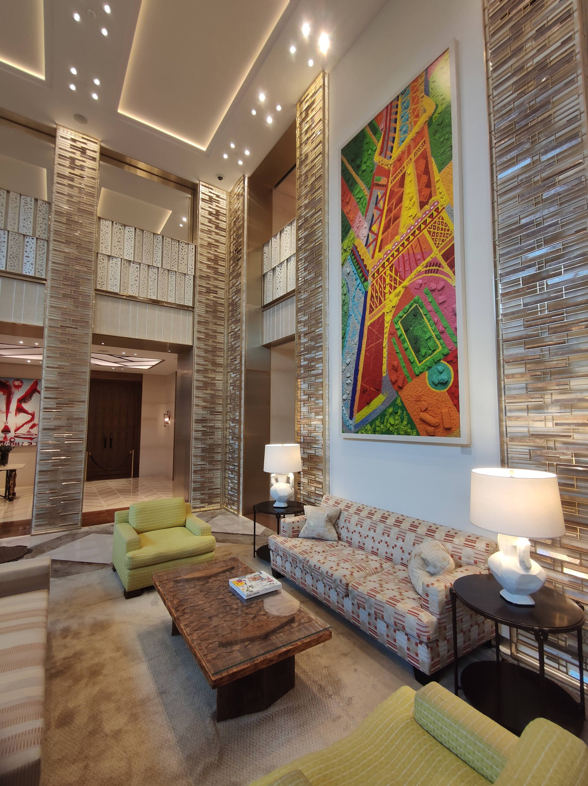

PATRI REALTY · PRÉVIA EDITORIAL · APURAÇÃO 22/10/2026 · NÃO PUBLICADO EM PRODUÇÃO
Guia Michelin: seis endereços para uma viagem de alto padrão
Três hotéis com três Chaves e três restaurantes com três Estrelas compõem uma curadoria internacional. Entenda os critérios antes de organizar sua viagem.

O que significa estar na distinção máxima
O Michelin diferencia a experiência de hospedagem pela atribuição de Chaves e reconhece restaurantes com Estrelas. São sistemas distintos: a distinção de uma hospedagem não se transfere automaticamente ao restaurante que funciona nela. A classificação de um hotel como cinco estrelas também não equivale a três Chaves. [1][2]
Para este roteiro, o recorte é internacional e privilegia cidades com contextos diferentes de arquitetura, hospitalidade e cultura gastronômica. A escolha é da Patri Realty; não reproduz um ranking de posição absoluta nem pressupõe que todos os endereços devam integrar a mesma viagem.
Três hotéis, três maneiras de pensar a estadia
Cheval Blanc Paris propõe uma base urbana junto ao Sena; Passalacqua situa a experiência em Moltrasio, no Lago de Como; Hôtel du Cap-Eden-Roc leva o recorte à costa de Antibes. As três fichas individuais do Michelin sustentam a seleção de hospedagem. [3][4][5]
Nossa sugestão é começar pelo ritmo desejado. Uma viagem voltada a museus e deslocamentos urbanos pede perguntas diferentes de uma estadia em que o próprio hotel será parte central do dia. Compare categoria de acomodação, acessibilidade, política de cancelamento e calendário de funcionamento antes de comparar apenas a diária.
Três mesas para colocar a gastronomia no roteiro
Na seleção de restaurantes, a Osteria Francescana está em Modena, o El Celler de Can Roca em Girona e o Le Louis XV no Hôtel de Paris Monte-Carlo, em Mônaco. As fichas e seleções oficiais Michelin são a referência para as distinções informadas. [6][7][8]
Nossa recomendação de planejamento é confirmar a mesa antes de travar uma viagem que dependa dela. Informe restrições alimentares, confira formato da experiência, pagamento e regras vigentes. A lista do guia não equivale a disponibilidade de reserva.
Como transformar curadoria em uma boa decisão
Leia os seis perfis individuais desta série para verificar localização, links oficiais e pontos de atenção específicos. Não incluímos preços sem uma data de estadia ou serviço definido e não tratamos imagens de arquivo como confirmação do ambiente atual.
Estes textos resultam de apuração documental; não são relatos de hospedagem ou refeições feitas pela redação. A distinção Michelin é um dado externo. A análise de adequação do endereço ao seu roteiro é uma proposta editorial e precisa considerar suas preferências.
Perguntas frequentes
Estrelas e Chaves Michelin são a mesma coisa?
Não. Nesta pauta, Estrelas se referem a restaurantes e Chaves a hotéis. Uma distinção não deve ser transferida para outro serviço.
Esses são os três melhores hotéis e restaurantes do mundo?
Não há esse ranking oficial estabelecido pela seleção aqui usada. Escolhemos três hotéis e três restaurantes na faixa máxima de suas respectivas distinções, sem ordem de preferência.
É possível reservar qualquer data?
Não há garantia. Calendário, disponibilidade, valores e condições devem ser consultados nos canais oficiais de cada estabelecimento.
Verbetes
- Chaves Michelin
- Distinção voltada à experiência de hospedagem, separada das Estrelas de restaurantes.
- Estrelas Michelin
- Distinção atribuída a restaurantes pelo guia; a faixa máxima é três.
- Curadoria editorial
- Seleção feita segundo um recorte declarado; não equivale a ranking universal ou avaliação oficial do veículo selecionado.
Fontes consultadas
- Michelin — seleção de Chaves 2026
- Michelin — apresentação das Chaves
- Michelin — Cheval Blanc Paris
- Michelin — Passalacqua
- Michelin — Hôtel du Cap-Eden-Roc
- Michelin — Osteria Francescana
- Michelin — El Celler de Can Roca
- Michelin — Le Louis XV
Continue a leitura
- Cheval Blanc Paris: três Chaves Michelin junto ao Sena
- Passalacqua: três Chaves Michelin no Lago de Como
- Hôtel du Cap-Eden-Roc: três Chaves na Riviera Francesa
- Osteria Francescana: três Estrelas Michelin em Modena
- El Celler de Can Roca: três Estrelas Michelin em Girona
- Le Louis XV: três Estrelas Michelin em Mônaco
Kit de publicação
- Título SEO
- Guia Michelin: hotéis e restaurantes de alto padrão
- Meta description
- Três hotéis com três Chaves e três restaurantes com três Estrelas compõem uma curadoria internacional. Entenda os critérios antes de organizar sua viagem.
- Legenda social
- Três hotéis, três restaurantes e critérios claros. Nossa curadoria Michelin passa por Paris, Lago de Como, Antibes, Modena, Girona e Mônaco. Entenda Chaves, Estrelas e o que confirmar antes de reservar.